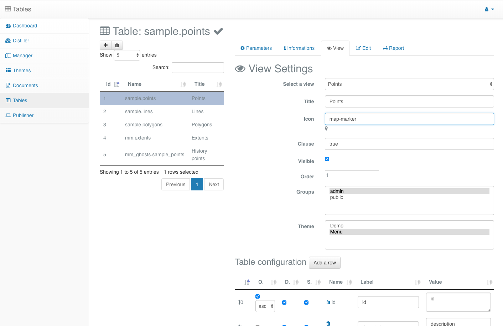

Introduction¶
A brief overview¶
General presentation¶
MapMint4ME means MapMint 4 (for) Measure and Evaluation, It is an Android application which allows you to edit geolocated data in online or offline mode.
MapMint4ME requires to connect to a MapMint server with tables configured as editable. Once those tables are available, users can then view, edit and produce reports online using the MapMint tables modules or record data on the field from the MapMint4ME Android Application.
- Using MapMint4ME application to record data on the field from your Android phone or tablet is as easy as:
- import: connect to MapMint server and download a local copy of the data structure within the application to record data on the field,
- edit/view: record your data then view recorded attributes in case you need it,
- export: upload the recorded data back in the table of the MapMint server.
In case you would like to get access to “maps” during your offline data recording, then you should use MapMint tools to produce tiles manually.
The schema below summarize the MapMint4ME mechanisms detailed in the next sections.
{kind=link}
MapMint Table module¶
MapMint Table module is composed of an administration interface which permits to configure some PostgreSQL tables as editable online and a client interface where users can identify himself to view, edit and produce a report about the data.
| MapMint Table Admin | MapMint Table Client |
|  |  |
| http://demo.mapmint.com/ui/Tables_bs | http://demo.mapmint.com/ui/public/tables/ |
{kind=link}
MapMint4ME Android application¶
1. Importing¶
As said in the introduction, MapMint4ME relies on the MapMint server. This last has the responsibility to provide the data to be recorded on the field with or without internet connectivity. MapMint uses a PostgreSQL database to store the data on the server side when the MapMint4ME Android application uses an SQLite database. Hence, the MapMint server provides a WPS Service able to convert the PostgreSQL database into SQLite one.
If on the server side there is only one PostgreSQL database to store all tables in a centralized manner, the conversion process generates two databases: one to store the data and another one the forms configuration and dependency tables, used for storing data displayed in the selection list. We have split the database for lowering the size of the database to upload back to the MapMint server.
The MapMint4ME Android application can download another database used to access a set of Tiles corresponding to the extent of your recording session.
2. Recording¶
You can record and visualize data on the field by using the Edit, View and Map modules. The Edit module gives you the capability to edit all tables configured as editable by a group of users. The View module gives you access to a similar display as you can get from the MapMint Table module online, meaning that you can view a list of available tuples in tables. The Map module gives you a way to visualize your recorded data on a basic map presenting recorded points, lines and polygons.
3. Exporting¶
After the field work is over and you get wifi connection (or 4G signal strong enough) then you can upload the data back on the MapMint server, you use the MapMint4ME Export module.
At this step, the MapMint server will have the responsibility to extract data recorded on the field and convert it from SQLite to PostgreSQL formats. As said earlier, only the recorded data will be uploaded back but not the dependencies tables or the configuration ones. At usage, during the Senegalese project for which we have created this MapMint4ME Android application, we realized that sometimes the dependencies tables are too big to be uploaded back to the server.
The workshop content¶
Schedule¶
During this workshop, you will get introduced to the basic configuration required for activating the Table module from MapMint to build forms to edit data online and from MapMint4ME. Then, you will install the MapMint4ME Android application on your phone or tablet and get it ready for data collection. Afterward, you will go outside and map the area around the workshop building. After 1/2h of recording, you will come back to the workshop room and upload the data back to the MapMint server. Using this data, you will publish a new project to give access to your data.
All along the workshop, you will use the demo server, available at https://demo.mapmint.com/ui/Dashboard_bs, rather than your own, using the following information: login: wsadmin / password: demo2019. It will ease the connection settings from MapMint4ME Android application, tables creation and configuration of the edition forms. Accessorily, it will also permit to share the data recorded by every team on the same server.
Note
Please, at any time, do not hesitate to ask the presenters any question you have during the workshop.
Before going any further, you have to figure out what shall be the final forms that we are willing to use for going on the field for data collection. Bellow, you can see the definition of what the final form should be.
You will create one form for the three different vector datatypes: points, lines, and polygons with the following attributes respectively.
wsxpoints:
| Column | Type |
|---|---|
| name | varchar(50) |
| category | integer (refering to a categories table) |
| description | text (HTML content) |
| photo | bytea |
| geometry | point |
wsxlines:
| Column | Type |
|---|---|
| name | varchar(50) |
| category | integer (refering to a categories table) |
| description | text (HTML content) |
| geometry | line |
wsxpolygons:
| Column | Type |
|---|---|
| name | varchar(50) |
| category | integer (refering to a categories table) |
| description | text (HTML content) |
| geometry | polygon |
Pre-requisites¶
You will need to create the tables to store the data you want to allow your users to edit on the field. To do so, you are invited to load the Distiller module and click on the mmdb DataStore to view the list of available DataSources.
From any of the layer listed, you can use the  button to access
the tool for converting vector. From this tool, select mmdb as
DataStore then, copy and paste the following SQL queries:
button to access
the tool for converting vector. From this tool, select mmdb as
DataStore then, copy and paste the following SQL queries:
-- Create table wsXpoints
CREATE TABLE sample.wsXpoints (
id serial PRIMARY KEY,
name varchar(50),
category int4 references sample.categories(id),
description text,
photo bytea
);
SELECT AddGeometryColumn
('sample','wsxpoints','wkb_geometry',4326,'POINT',2);
-- Create table wsXlines
CREATE TABLE sample.wsXlines (
id serial PRIMARY KEY,
name varchar(50),
category int4 references sample.categories(id),
description text
);
SELECT AddGeometryColumn
('sample','wsxlines','wkb_geometry',4326,'LINESTRING',2);
-- Create table wsXpolygons
CREATE TABLE sample.wsXpolygons (
id serial PRIMARY KEY,
name varchar(50),
category int4 references sample.categories(id),
description text
);
SELECT AddGeometryColumn
('sample','wsxpolygons','wkb_geometry',4326,'POLYGON',2);